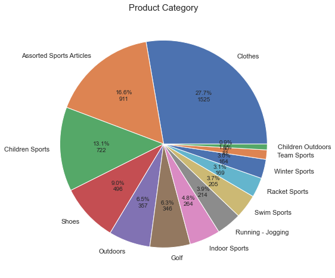
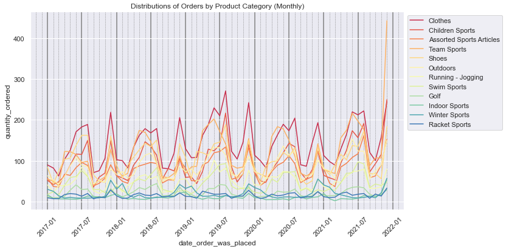
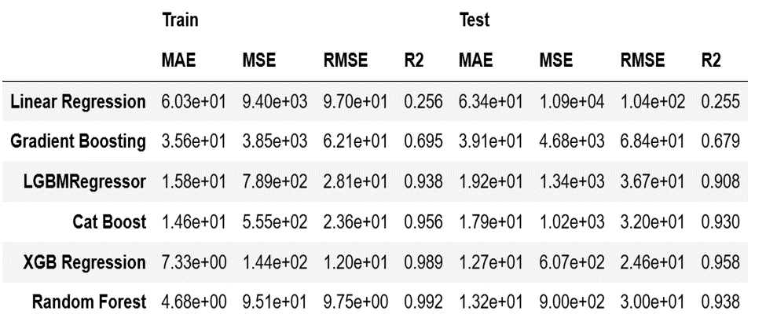

Online Sporting Goods Forecaster
Demo video showing the forecasting workflow and project interface.
Project Overview
Built a machine-learning workflow to forecast order quantity for an online sporting-goods wholesale and retail dataset. The goal was to estimate future demand by time period and product category, helping support inventory planning and reduce costs related to inaccurate demand forecasts.
Business Problem
Retail demand can vary across product categories, seasons, and price segments. Poor forecasting can lead to overstocking, stockouts, and operational inefficiencies. This project compares multiple regression models to determine whether machine learning can improve demand forecasting over a Linear Regression benchmark.


What I Did
I cleaned and merged order records with product-supplier information, engineered time-based and product-level features, and analyzed demand patterns across months and product categories. I then trained and compared Linear Regression, Gradient Boosting, LightGBM, CatBoost, XGBoost, and Random Forest models using MAE, MSE, RMSE, and R².
Results & Impact
XGB Regression was the best-performing model, reducing test RMSE from 104 orders with Linear Regression to 24.6 orders. This represents a 76% reduction in forecast error. Assuming each unit of forecast error corresponds to approximately $25 in business cost, the model corresponds to an estimated $23.8K in annual savings.
